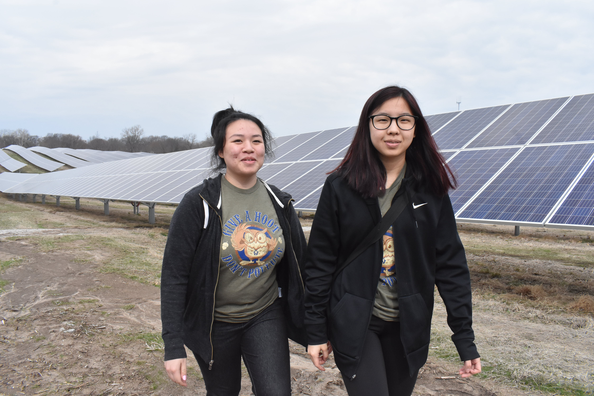
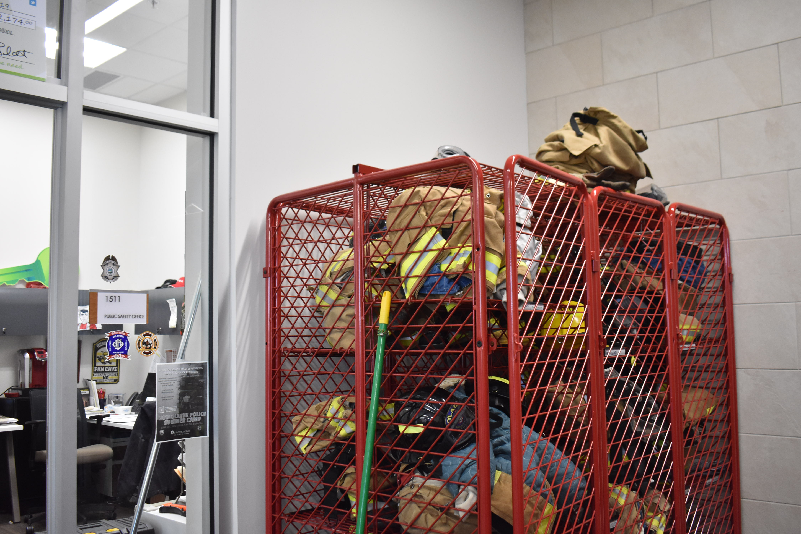

Our School
Our School
Olathe West High SChool, Home of the Owls
CTE Pathways and Academies
To be considered a CTE Completer, a student must complete a minimum of 3.0 credits within a pathway; at least 2 of those credits must be a combination of technical and application level courses plus earning an industry-recognized certification or passing a third-party, end-of-Pathway assessment.
Green Tech

Green Tech: (1 CTE pathway)
- “Energy & Sustainability” Students will be prepared to pursue a career in the green technology field through problem solving, research, design, and professional learning experiences. “
- “Students in the Green Tech Academy learn about energy and sustainability as they work towards an energy industry-recognized credential through the KSDE Career and Technical Education Energy Pathway. Students develop more than just knowledge of wind and solar, but an in-depth insight into how transitioning towards sustainable energy will affect every part of our lives. Students within the Academy are encouraged and given class time to pursue their own personal interests related to energy or the environment. Currently, we have students making their own wind turbines for the KidWind competition, building a farming robot and an electric vehicle we hope to race someday.The Green Tech Academy makes this happen by connecting with industry partners to provide students with a diverse collection of learning experiences. As a result, our students are engaged in problem-solving and critical thinking through real-world STEM applications to build 21st Century Career Skills.“
Energy
Investigations in Green Tech I
Investigations in Green Tech II
Environmental Science
Energy, Power & Society
Energy Industry Fundamentals
Green Tech Senior Capstone
Public Safety

Public Safety: (2 CTE pathways)
“Law Enforcement and Fire Rescue” Students in the 21st Century Public Safety Academy will gain the knowledge and skills necessary for post-secondary experiences in the professions of fire rescue or law enforcement. Students will learn specific content knowledge, hands-on skills, and employment skills which focus on team work, problem-solving, decision making, speaking and listening, and the necessary physical skills involved within the professions.
Emergency & Fire Management Services
Introduction to Public Safety
Emergency Medical Responder (EMR)
Public Safety Physical Education
Fire Rescue I
Fire Rescue II
Public Safety Senior Capstone
Corrections, Security & Law Enforcement
Introduction to Public Safety
Accounting I
Accounting II
Civic Leadership Fundamentals-Legal Studies
Emergency Medical Responder (EMR)
Forensic Science
Public Safety Physical Education
Law Enforcement I
Law Enforcement II
Civic Leadership Applications-Legal Studies
Civic Leadership Academy Senior Capstone
Public Safety Senior Capstone
Other CTE Pathways
Construction and Design
Introduction to Technology Education
Introduction to Design I
Architecture Design I
Architecture Design II
Engineering Drafting/CAD I
Engineering Drafting/CAD II
Interior Design II
Commercial Design
Advanced Studies in Design
Research & Design for Pre-Construction II
Digital Media
Business Essentials
Computer Applications I
Computer Applications II
Digital Media Technology: Yearbook Graphic Design I
Graphic Design II
Intro To Journalism
Media & Public Relations: Newspaper
Photojournalism
Video Production I
Editorial Leadership Design and Production
Video Production II
Family, Community & Consumer Services
Career and Life Planning
Consumer & Personal Finance
Culinary Essentials I
Family Studies
Human Growth & Development
Nutrition & Wellness
Career Connections
Community Connections
Marketing
Business Essentials
Accounting I
Accounting II
Business Communications
Business Management
Graphic Design I
Graphic Design II
Entrepreneurship
Principles of Marketing I
Principles of Marketing II
Web Design I
Web Design II
Marketing Applications Capstone I
Marketing Applications Capstone II
Programming & Software Development
Computer Applications
Computer Applications
Introduction to Computer Coding
Computer Programming
Computer Programming II
Computer Science A
Web Design I
Web Design II
Restaurant & Event Management
Business Essentials
Principles of Marketing I
Principles of Marketing II
Entrepreneurship
Career Connections
Community Connections
Career and Life Planning
Baking & Pastry I
Culinary Essentials I
Culinary Essentials II
Nutrition & Wellness
Culinary Arts I: Baking & Pastry II (1st sem)
Culinary Arts I: Baking & Pastry II (2nd sem)
Culinary Arts I: Culinary Arts I (1st sem)
Culinary Arts I: Culinary Arts I (2nd sem)
Culinary Arts II: Culinary Arts II (1st sem)
Culinary Arts II: Culinary Arts II (2nd sem)
Culinary Arts II: Event Planning & Management (1st sem)
Culinary Arts II: Event Planning & Management (2nd sem)
Culinary Arts II: Culinary Applications (1st sem)
Culinary Arts II: Culinary Applications (2nd sem)
Visual Arts - Fashion, Apparel, Interior Design (FAID)
Career and Life Planning
Apparel Production I
Apparel Production II
Essentials of Fashion, Apparel, Interior Design
Fashion Trends I
Fashion Trends II
Interior Design I
Interior Design II
FAID Studio
Web & Digital Communications
Computer Applications I
Computer Applications II
Computer Programming I
Computer Programming II
Graphic Design I
Graphic Design II
Web Design I
Web Design II
Web & Digital Communications Project Management
Our School
Our Team